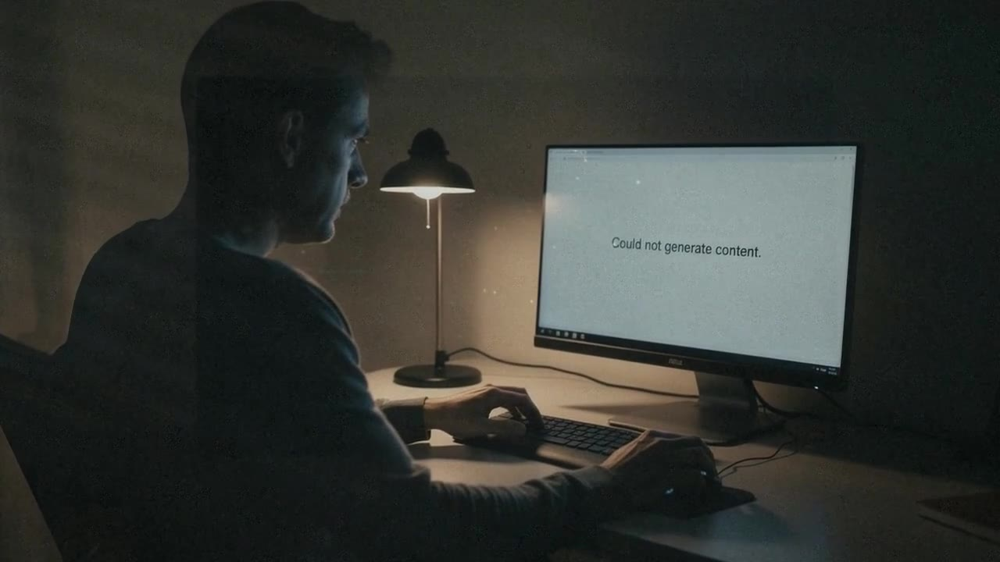
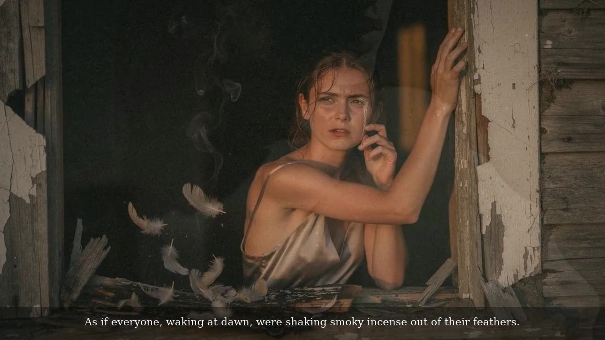
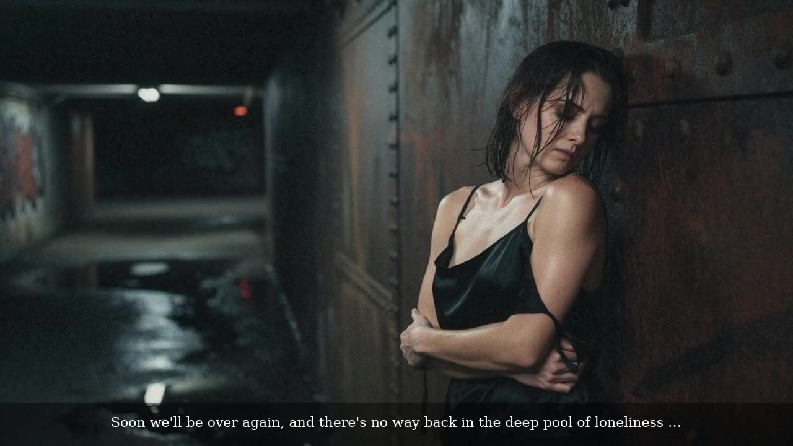

Could not generate content.
The machine refuses. The film begins inside the refusal.
Synopsis
A man sits at a monitor that says: Could not generate content. The title is the first shot, and the poem it comes from kept that refusal as its name.
A woman writhes in a torn net in a riverbed, runs up a stairwell skipping every floor, shakes smoky incense out of feathers at dawn, and waits alone against a rusted tunnel wall in the smoke of a Sobranie. It ends on a girl with a laptop at night, “in a hotel on an island where a man died looking for paradise.”
Adult in mood, never explicit. On screen and in the voice: English. The LITPROM poems exist only in Russian and were translated line for line for the film.
Poems in the film
- #099 Could not generate content. ATUONA
- #015 Frozen (Застывшее) LITPROM
- #024 Burned Out (Сгоревший) LITPROM
- #037 From the Hurt (От обиды) LITPROM
- #022 Wild Tales Curl (Вьются шальные повести) LITPROM
- #020 Nobody’s (Ничья) LITPROM
- #066 The Threshold ATUONA
- #091 Code and Canvas ATUONA
Credits
- Poems, direction, edit
- Kira Velerevich (Elena Revicheva)
- Material
- 19 video renders and 20 stills from the artist’s own sessions, all used, nothing added
- Image
- Flux 2 Pro stills
- Motion
- Luma, Kling, Veo, Seedance · stills set in motion with a depth-based 2.5D camera (Depth Anything V2)
- Voice
- OpenAI tts-1
- Music
- “Red Lips (Sensual Noir Lo-Fi Beat)” — WBM Studio (Pixabay)


